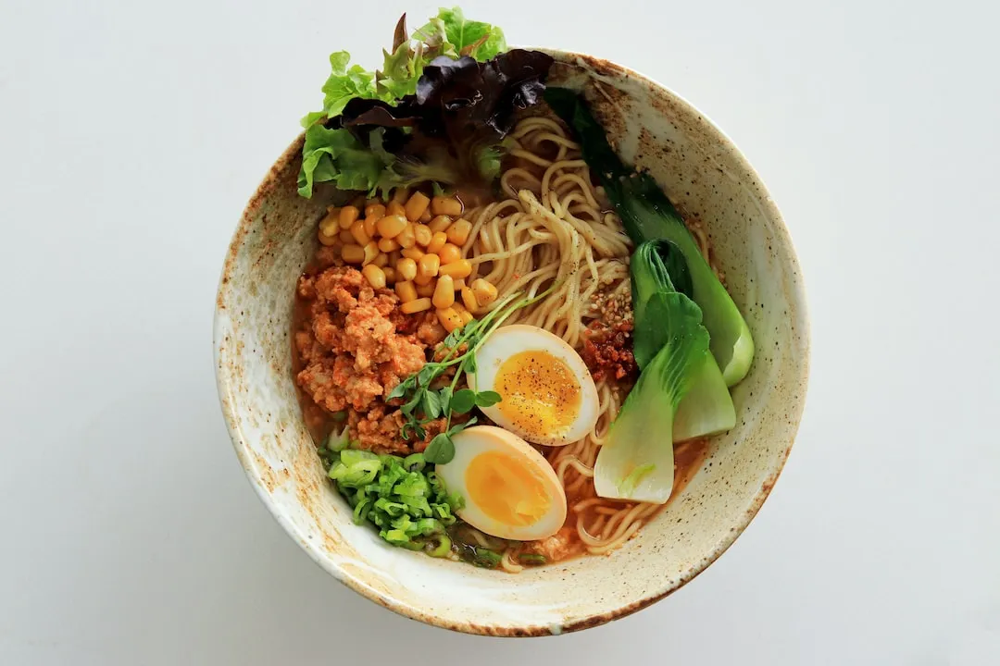

Ramen Noodel Soup is a delicous easy meal that you can make by your self on a budget in a minimun of 10 min. It is one of the many delights of the world. In this recipe you can make ramen with less than 10 ingreadients!!